このダッシュボードは、Sentinel-1衛星のSARレーダー波形をリアルタイムに解析し、タンクの液面変化を監視する実験的なプロジェクトです。以下のチャートとAIレポートは、最新の観測データとGoogle検索からの情報を組み合わせて生成されたものです。
OSSプロジェクトのGitHubリポジトリ: https://github.com/rohiniku/s1-tank-monitor
※本レポートは、宇宙からのレーダー波形を自律的に読み解いたAIが、今朝のGoogle検索ニュースとリアルタイムに結合して自動生成した実験用ファクトチェック報告です。
・shibushi基地では、2026年4月以降、VV偏波のデシベル値が過去の平均的なベースラインと比較して継続的に上昇しており、特に5月以降は2.0dBを超える高水準で推移している。これは、石油タンクの蓋が上昇し、在庫が増加している物理的変化を示唆する。 ・fukui基地では、2025年6月22日と11月25日にVV偏波が一時的に9.65dB、7.02dBと異常に跳ね上がった。これは一点のみのスパイクであり、撮影当日の大雨による鏡面反射ノイズの可能性が高い。直近データは平均的なベースラインで安定している。 ・shibushi基地のVV偏波の継続的な高値は、在庫が満タンに近い状態を維持していることを示唆しており、今後の動向に注意が必要である。 ・fukui基地の突発的なスパイクはノイズと判断されるが、今後のデータで同様の異常な跳ね上がりが複数回観測された場合、その原因を再評価する必要がある。
・志布志基地では、2026年4月から5月にかけてVV偏波が著しく上昇し、在庫が大幅に増加したことを示唆しています。また、8月下旬から9月上旬にも同様の増加傾向が見られます。 ・苫小牧基地では、2026年3月の積雪回復後、4月から5月にかけてVV偏波が急上昇し、その後も高水準を維持しており、在庫が継続的に補充されているか、高稼働状態にあることを示しています。 ・志布志基地では、2026年3月26日以降に国家備蓄原油の放出が発表されたにもかかわらず、4月から5月にかけてSARデータは在庫の大幅な増加を示しており、報道内容と物理データに明確な矛盾が生じています。 ・苫小牧基地では、2026年3月26日以降に国家備蓄原油の放出が発表されたものの、SARデータは放出による明確な在庫減少を示さず、むしろ4月以降に急激な増加と高水準の維持が見られ、報道された放出が迅速に補充された可能性、または放出規模がSARデータに反映されにくい状況であった可能性を示唆しています。 ・国家備蓄放出が発表された基地でSARデータが在庫増加を示す矛盾は、放出の実態やその後の補充活動の透明性について、さらなる詳細な情報開示が求められる最大の警戒シグナルです。
・志布志基地では2026年4月以降、VV偏波が継続的に上昇し、原油在庫が大幅に増加傾向にある。他の主要基地は冬季の気象ノイズを除き、過去平均水準を維持しており、全体として危険水準への突入は確認されない。 ・中東情勢は米・イラン間の対立激化とフーシ派の攻撃により、原油供給途絶リスクが継続。特に2026年11月にはホルムズ海峡でタンカーが機雷に接触・炎上し、海上輸送の安全性が著しく低下している。原油生産は回復傾向にあるが、代替輸送経路はコスト増を伴い、石油製品の供給回復は遅延。日本の高い中東依存度を考慮すると、国内在庫が安定していても外部供給網の脆弱性は深刻である。 ・ホルムズ海峡での船舶攻撃が常態化し、実質的な通航制限が長期化すること、および米・イラン・イスラエル間の軍事衝突が再燃し、主要な代替輸送経路も標的となる事態。
📊 最新の幾何アライメント済・移動平均観測チャート
（※画像上でダブルタップまたはピンチアウトすることで、ブラウザ標準の滑らかなズーム操作が可能です）
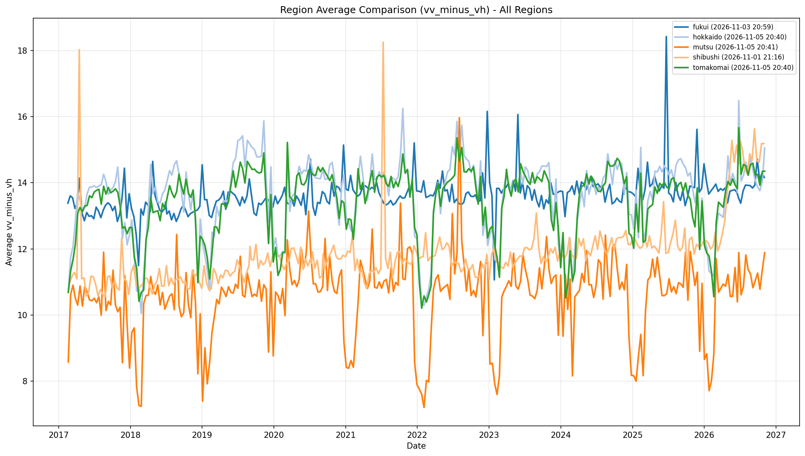
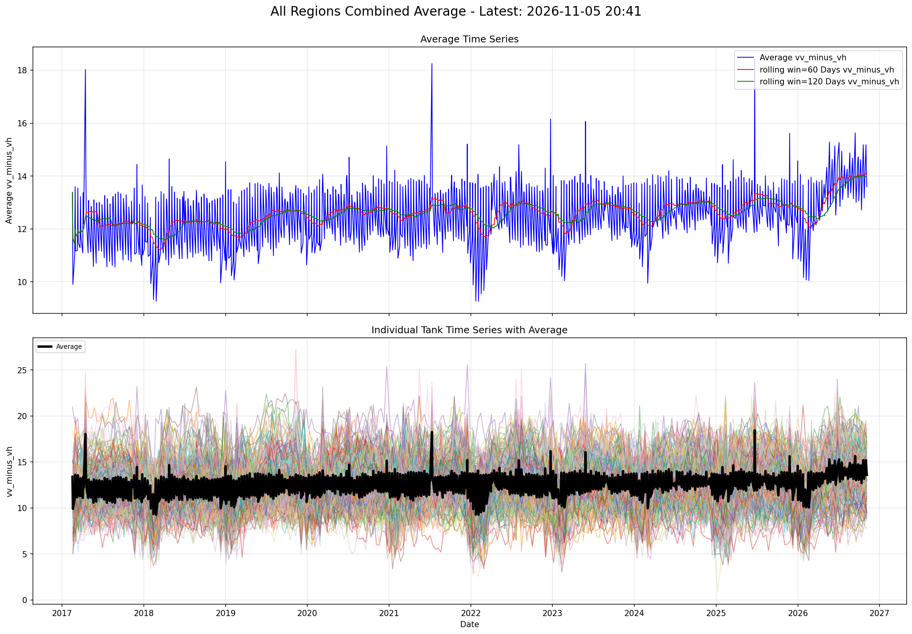
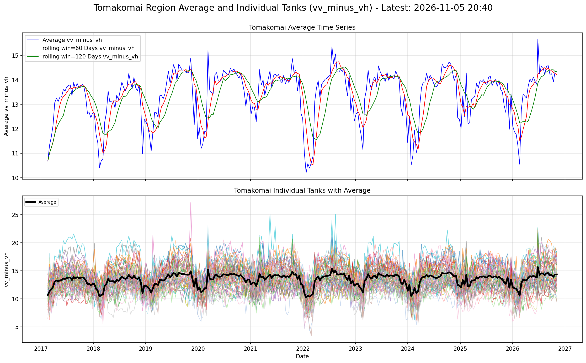
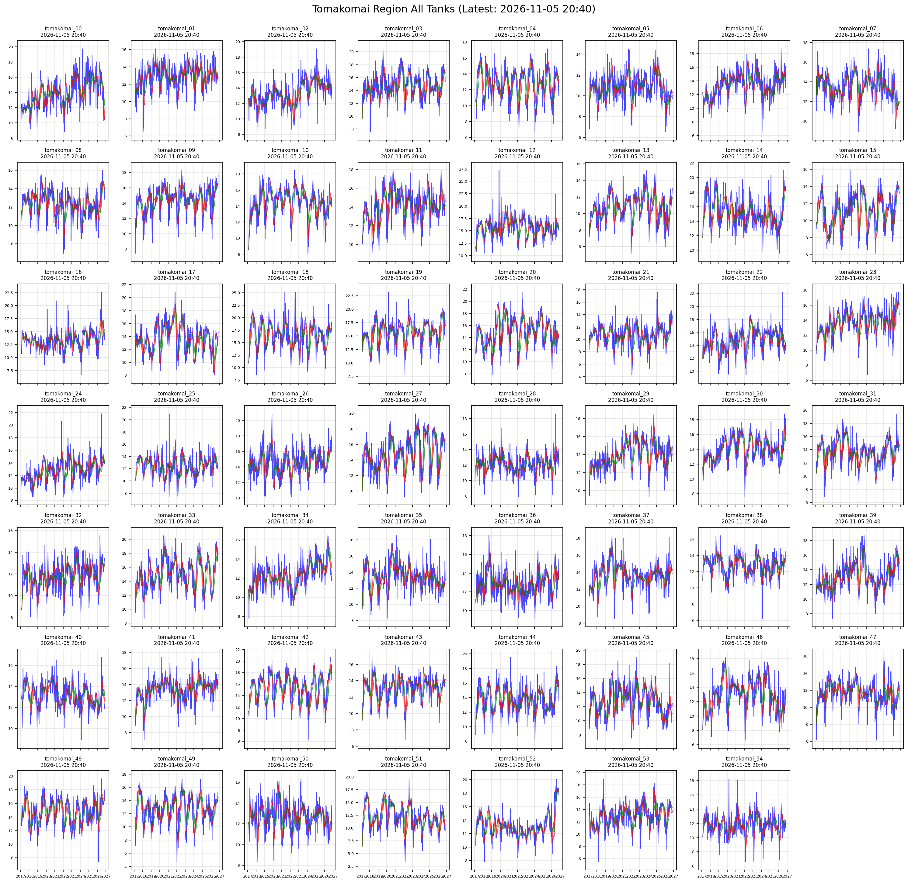
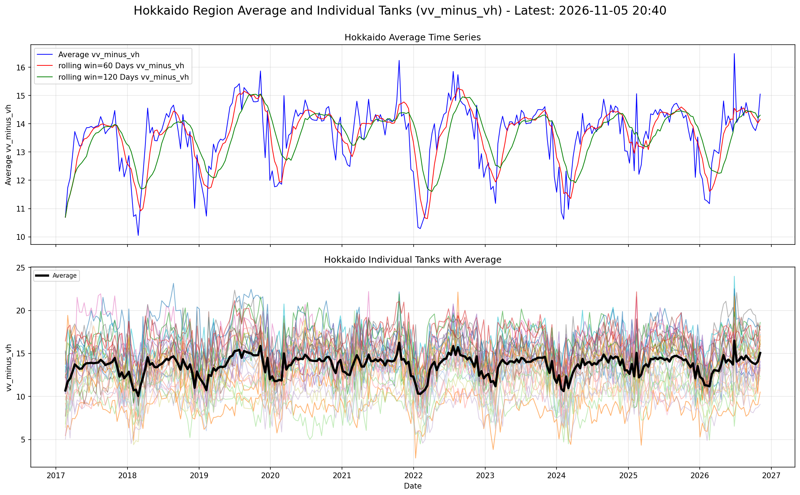
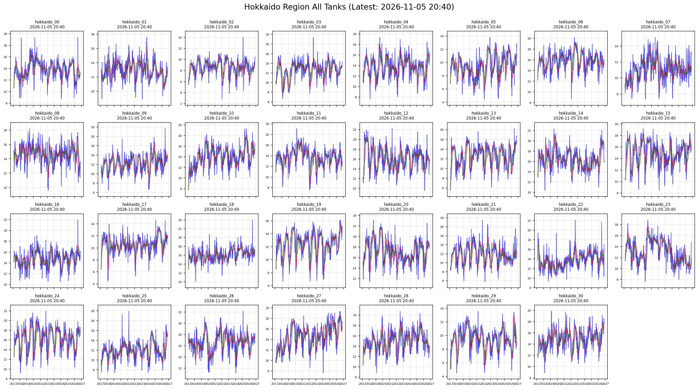
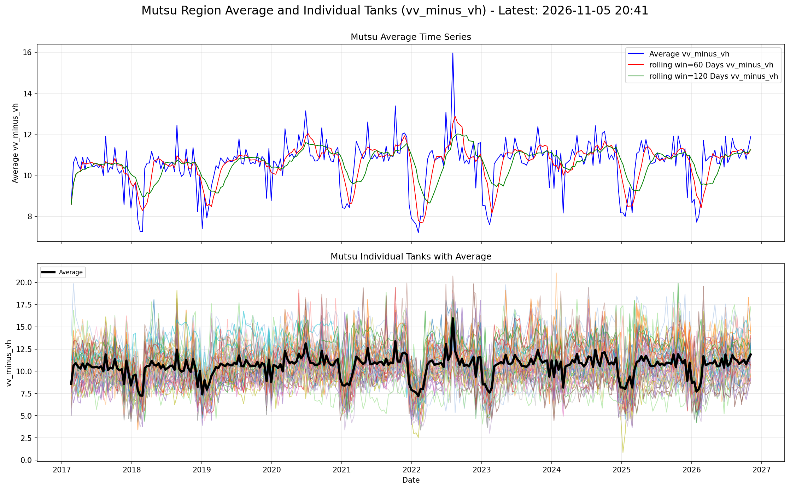
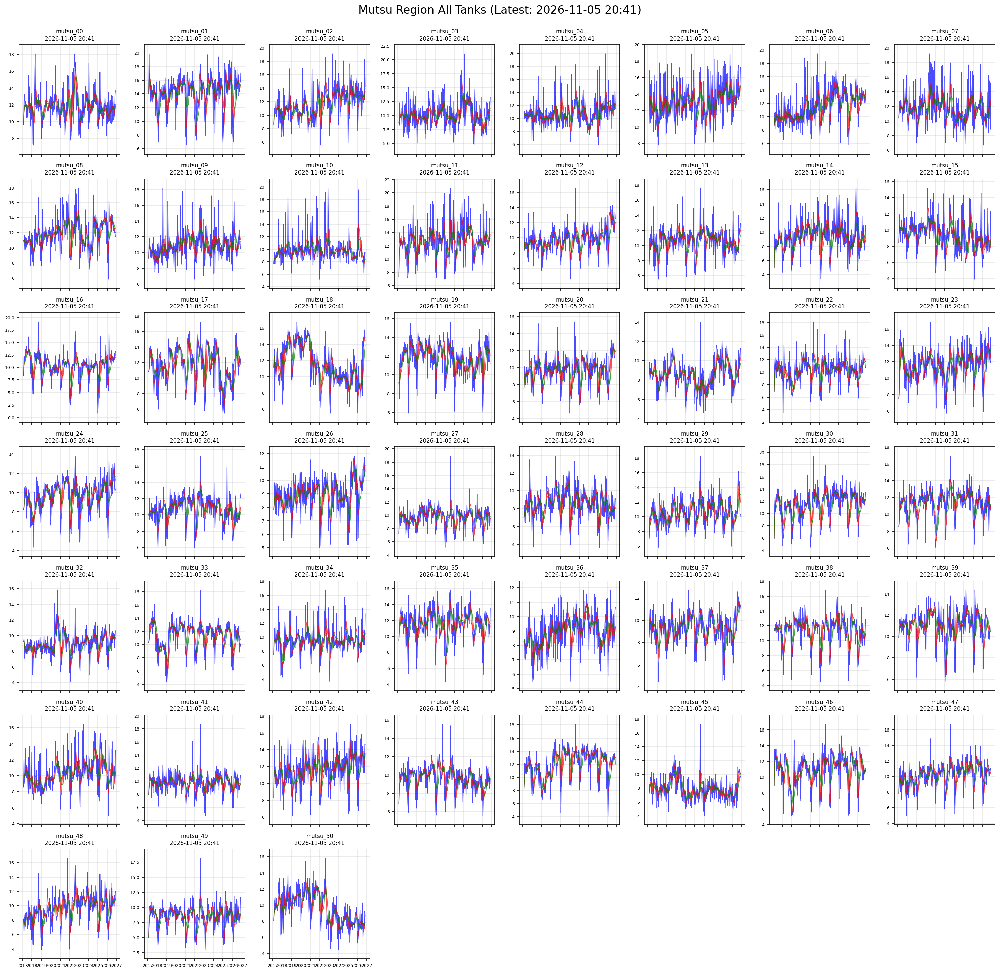
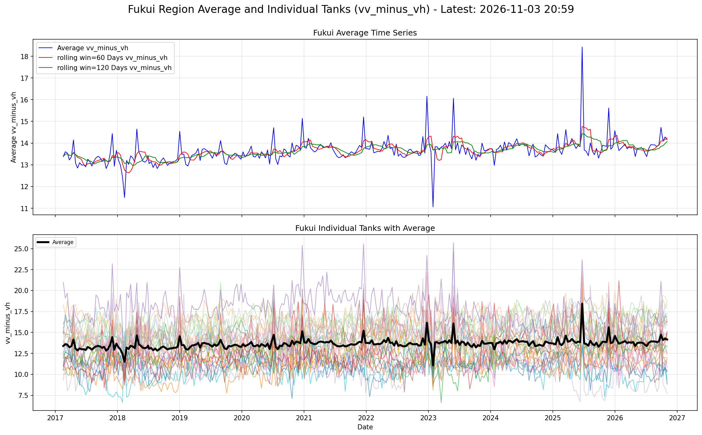
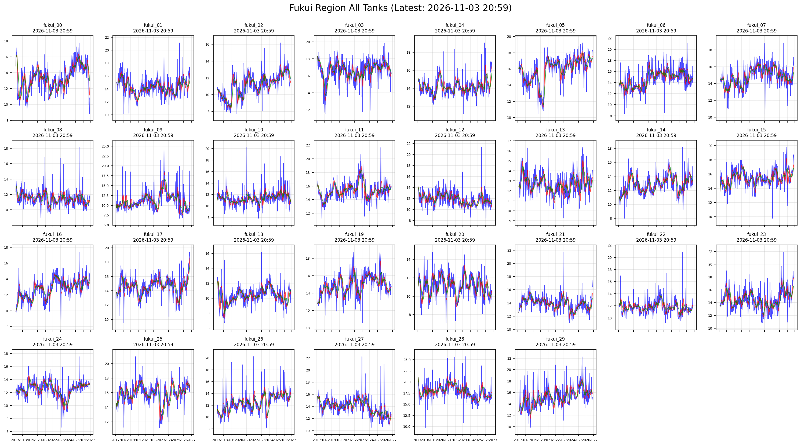
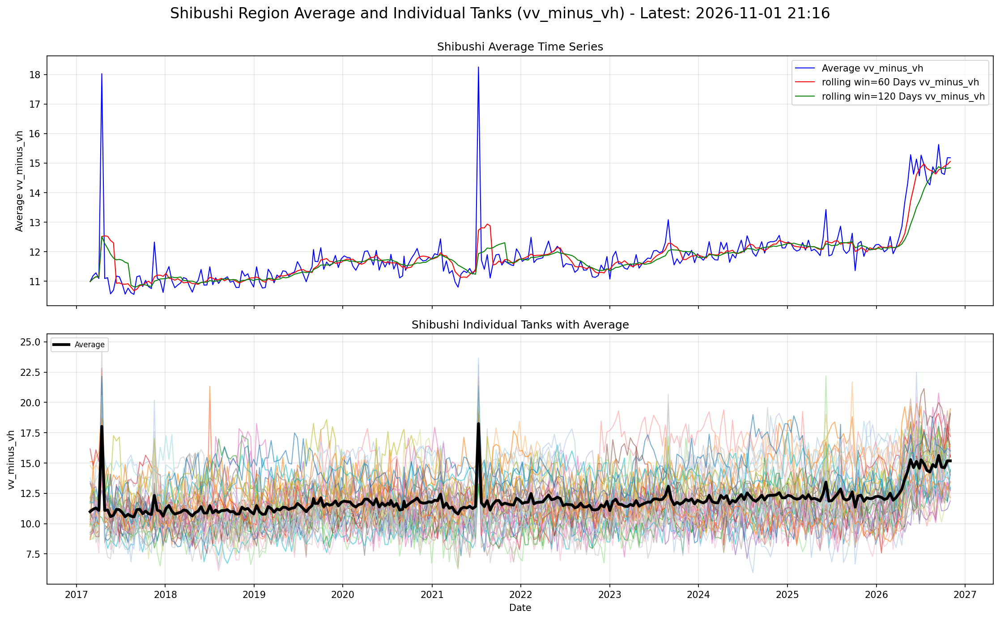
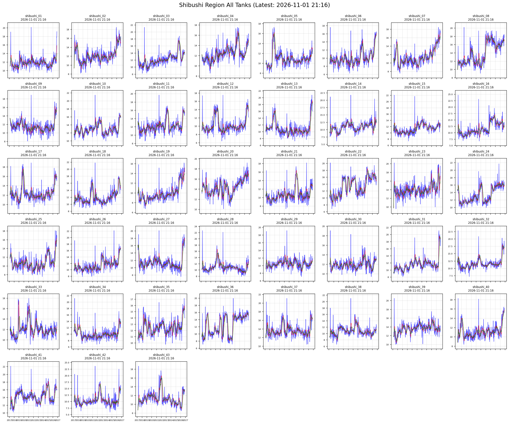